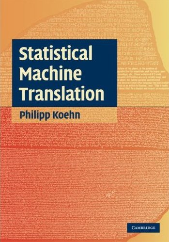

About this course
- Class Mailing List: cmpt-882@sfu.ca (always use 'cmpt-882:' prefix on Subject line)
- Location: Burnaby Mountain Campus
- Class number: 12577
- Section: D100
- About the course:
This special topics course will be focused on statistical machine translation (data-driven approaches that translate speech or text from one human language to another). Three major paradigms will be covered: word-based translation, phrase-based translation, and syntax-based translation. Students will gain hands-on experience with building translation systems and working with real-world data, and they will learn how to formulate and investigate research questions in machine translation.
- Course Outline: on CS Portal
- Grading for the course:
- 3 homeworks: 10% each (total of 30%)
- Class participation (in-class + email): 15%
- 2 in-class presentations: 5% each (total of 10%)
- Project proposal: 5%
- Final project write-up: 15%
- Final project results: 25%
Textbook and References
Textbook:
-
 Statistical Machine Translation by Philipp Koehn. Hardcover, 488 pages. Publisher: Cambridge University Press. ISBN-10: 0521874157. ISBN-13: 978-0521874151
The book also has a webpage. In particular visit it for the Errata.
We will follow the material in this textbook closely but not in all aspects. We will also read research papers as listed in the Syllabus.
Readings
- Introduction to Statistical Machine Translation
- Sep 6, 8, 13, 15
- Sep 15 truncated to 1 hour due to Distinguished Lecture
- Chp 1-2, Koehn. (see Textbook tab)
- Knight, Automating knowledge acquisition for machine translation, AI Magazine 18(4), 1997.
- Lopez, Statistical Machine Translation. In ACM Comp. Sur. 40(3): Article 8, pages 1-49, August 2008. Read the Errata for this survey on Adam's web page.
- Chiang, Huang and Knight, Slides on introduction to the statistical approach to MT.
- Lopez, Statistical Machine Translation. A 1 week course on SMT taught at ESSLLI 2010.
- Decoding for phrase-based SMT
- Sep 20, 22, 27
- Chp 6, Koehn
- Koehn, Pharaoh: a Beam Search Decoder for Phrase-Based Statistical Machine Translation Models, AMTA 2004.
- Koehn, Statistical Machine Translation: the basic, the novel, and the speculative, Tutorial at EACL 2006.
- Koehn, Och, Marcu, Statistical Phrase-Based Translation. HLT NAACL 2003.
- Evaluation
- Sep 29
- Chp 8, Koehn
- Papineni et al, BLEU: A Method for Automatic Evaluation of Machine Translation. ACL 2002.
- Papineni, Introduction to SMT and the Bleu metric. Presentation Slides. (for description of Bleu, jump to pages 57-75)
- Minimum Error Rate Training of Log-linear models for SMT
- Oct 4, 6
- Chp 9.3, Koehn
- Och, Minimum Error Rate Training in Statistical Machine Translation. ACL 2003.
- Link: Zaidan, zmert and zmert paper.
- Word Alignment
- Oct 11, 13, 18
- Chp 4, Koehn
- Kevin Knight's MT Workbook. We will discuss sections 15-37.
- Vogel, HMM-Based Word Alignment in Statistical Translation, COLING, 1996.
- Zhao and Gildea, A Fast Fertility Hidden Markov Model for Word Alignment Using MCMC. In EMNLP 2010.
- Och and Ney, A Systematic Comparison of Various Statistical Alignment Models. Comput. Ling. v29, 2003.
- Hierarchical Phrase-based SMT and LR Decoding
- Oct 20, 25
- Chiang, Hierarchical phrase-based translation. 2007. Comput. Ling. 33(2):201-228.
- slides by M. Razavi, M. Siahbani and R. Vadlapudi.
- Watanabe, Tsukada and Isozaki. Left-to-Right Target Generation for Hierarchical Phrase-based Translation. COLING-ACL 2006.
- slides by M. Razavi, M. Siahbani and R. Vadlapudi.
- Huang and Mi. Efficient Incremental Decoding for Tree-to-String Translation. EMNLP 2010.
- Huang and Sagae. Dynamic Programming for Linear-time Incremental Parsing. ACL 2010.
- Discriminative Re-ranking
- Oct 27, Nov 1
- Shen, Sarkar and Och, Discriminative Re-ranking for SMT. HLT NAACL 2004.
- Hopkins and May, Tuning as Ranking. EMNLP 2011.
- Cer, Manning, Jurafsky, The Best Lexical Metric for Phrase-Based Statistical MT System Optimization. NAACL 2010.
- Syntactic Re-ordering for SMT
- Nov 3, 8
- Collins, Koehn, Kučerová, Clause restructuring for statistical machine translation. ACL 2005.
- Wang, Collins, Koehn, Chinese syntactic reordering for statistical machine translation. EMNLP 2007.
- Xu et al, Using a dependency parser to improve SMT for subject-object-verb languages. HLT NAACL 2009.
- Xia, McCord, Improving a Statistical MT System with Automatically Learned Rewrite Patterns. COLING 2004.
- Talbot et al, A lightweight evaluation framework for machine translation reordering. WMT 2011.
- Discriminative Learning for MT
- Nov 10, 17
- Liang et al, An End-to-End Discriminative Approach to Machine Translation. ACL-COLING 2006.
- Tillmann and Zhang, A Discriminative Global Training Algorithm for Statistical MT. ACL-COLING 2006.
- Dyer et al, Unsupervised Word Alignment with Arbitrary Features. ACL 2011.
- Berg-Kirkpatrick et al, Painless Unsupervised Learning with Features. NAACL 2010.
- Discriminative Tuning for MT
- Nov 15, 17
- Chiang, Wang, Knight, 11,001 new features for statistical machine translation. NAACL HLT 2009.
- Watanabe et al, Online Large-Margin Training for Statistical Machine Translation. EMNLP-CoNLL 2007.
- Blunsom, Cohn, Osborne, A Discriminative Latent Variable Model for Statistical Machine Translation. ACL 2008.
- Syntax-based SMT
- Nov 17, 22
- GHKM, What's in a translation rule?. NAACL HLT 2004. (dll4)
- DeNeefe et al, What Can Syntax-Based MT Learn from Phrase-Based MT? EMNLP-CoNLL 2007. (rahman)
- Nov 22
- GHKMDWT, Scalable Inference and Training of Context-Rich Syntactic Translation Models. COLING-ACL 2006. (mrazavi, msiabhan, rvadlapu)
- Nov 24
- Graehl, Knight, May, Training Tree Transducers. Comput. Ling. 34(3). 2008. (mrazavi, msiabhan, rvadlapu)
- Miscellaneous Topics in SMT
- Nov 24
- Ravi, Knight. Deciphering Foreign Language. ACL 2011. (aca69)
- Koehn and Hoang, Factored Translation Models. EMNLP-CoNLL 2007. (mwhitney)
- Nov 29
- Genzel, Uszkoreit, Och. "Poetic" Statistical Machine Translation: Rhyme and Meter. EMNLP 2010. (ssaghaei)
- Greene, Bodrumlu, Knight. Automatic Analysis of Rhythmic Poetry with Applications to Generation and Translation. EMNLP 2010. (mengyunk)
- Dec 1
- Tromble et al, Lattice Minimum Bayes-Risk Decoding for Statistical Machine Translation. EMNLP 2008. (hosseinh)
- Rosti et al, Combining Outputs from Multiple Machine Translation Systems. NAACL 2007. (bhull)
- DeNero et al, Model Combination for Machine Translation. NAACL 2010. (abakhtia)
Homeworks
- Homework #1. Sep 08 - Sep 29. 10%
- Homework #2. Sep 29 - Oct 13. 10%
- Homework #3. Oct 14 - Oct 28. 10%
Homework Submission
- Your homework will be submitted electronically using the department-provided submission server. Connect to the submission server by going to the URL: https://courses.cs.sfu.ca/ (your grades for the homeworks will also be tracked on the same web page)
- All homeworks are due by 11:45 PM on the homework due date.